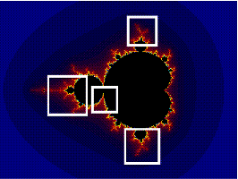

Zooming allows you to explore deeper levels of a fractal. Zooming in increases magnification, revealing fine detail, while zooming out reduces magnification to show a wider view.
ManpWIN provides two methods for defining the zoom region:
These modes can be selected via:
Options: Zoom Along Edge (TRUE/FALSE)
To zoom in:
The selected area will expand to fill the display window.
To zoom out:
For most fractals, zoom depth is limited by the precision of standard floating-point arithmetic. Beyond a certain magnification, numerical precision is lost and image quality degrades.
ManpWIN overcomes this limitation for selected fractals by using higher precision methods, including arbitrary precision arithmetic and perturbation techniques.
Using these methods, zoom levels of approximately 101600 or greater can be achieved. However, this comes at a significant cost in performance compared to standard calculations.

Main window showing zoom selection.